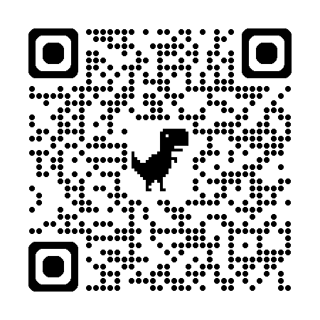

Inovace ve veřejné správě? 🤔
Erik Vaněk
designer služeb

O čem to bude?
- Bio
- Vzdálenější minulost
- Čerstvá minulost
- Současnost
- Budoucnost
- A co s tím?
Co tady dělám?
- FI MUNI
- ❤️ KISK ❤️ I & II
- 10+ let v tech prostředí
- Vývoj, design, product management
- Od 2024 naplno design služeb
- Ministerstva, nezisk, inovační agentury
Infarm
vzestup a pád globální bylinkárny
- Vývoj hydroponických farem
- Globálně distribuovaná síť zařízení
- Hyper-growth prostředí
- investováno přes $600M
- 12x růst během 3 let
- dnes téměř bankrot
- Zábavná, divoká, děsivá a zároveň pestrá jízda
Infarm II
- Nesmírně pestrý tým lidí
- Software, botanika, industriální i UX design, kuchaři, údržbáři, bizdev, ...
- Co mi to dalo?
- Nové možnosti a zkušenosti
- Super kámoše ❤️
- Skvělý recepty
- Vystřízlivění
2023 a dál
- Service design, product management consulting
- Veřejná správa, nezisk, startupy
- Např.
- Inovační projekty při MPSV
- Spolupráce s JINAG
- Digitální transormace IQRS
Je to jízda, ale jinak
- Potkávám nesmírně inspirativní lidi
- Dostávám se na zajímavé místa
- Výzkum, workshopy, prototypy, protlačování, politika 😅
KISK II
- Vrátil jsem se zpátky na online DIS
- Skvělý lidi, skvělej obsah, někdy zmatek
- Každopádně jsem tam našel Drýmtým
- František
- Johanka
- Veronika
- a já
- Každej jsme jinej a v tom je naše síla 💪
Co děláme?
- Zjišťujeme stav inovativnosti české státní správy
- Položili jsme si otázku:
-
Jak fungují týmy, které úspěšně inovují státní správu?
- a začali vyzvídat
- na ministerstvech
- vládních analytických útvarech
- inovačních odděleních
Co jsme zjistili?
- Máme 12 zjištění z prostředí inovátorstva ve státní správě
- Často jsou to různé copingové strategie, jak se vypořádat s byrokracií a rigidností toho prostředí
- Velkou roli hrají:
- vnitřní motivace
- podpora a osvícenost vedení
- ochota k týmové spolupráci
- otevřenost novým nápadům
Co bude dál?
- Aktuálně řešíme 🤔
- Naše výstupy chceme vydat
- Navázat na ně workshopy
- Případně nějakou dlouhodobější aktivitou, agenturou, ...
- Zajímá vás to? Dejte vědět!
Budoucnost aka pozvánky 🎉
- 17.10. Workshop na Dnech AI
- AI jako váš průvodce sociálně-zdravotním labyrintem
-
13.11. Minikonference 3 tváře
spravedlivé tranzice
- Jak rozumíme tomu, co znamená udržitelná práce?
-
Nový kurz v jarním semestru
- Kapacita cca 20 lidí
- Design ╳ Product management ╳ software development
- Více detailů snad už brzo!
Dík za pozornost!
Máte otázky? 🌈